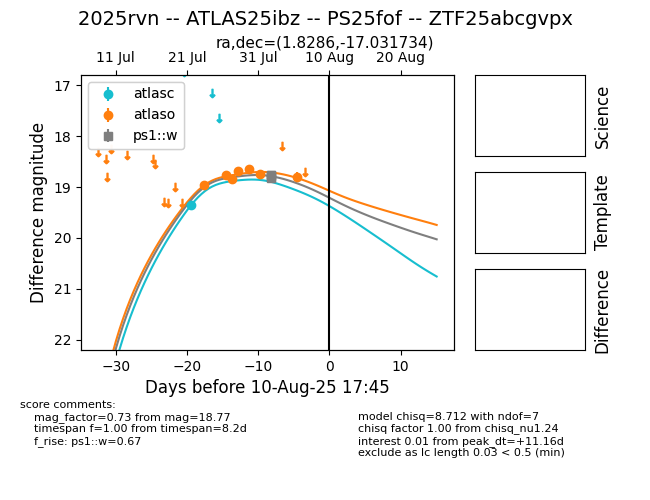

Target 2025rvn at 2025-08-05 20:15, see:
FINK: fink-portal.org/2025rvn
Lasair: lasair-ztf.lsst.ac.uk/objects/2025rvn
ALeRCE: alerce.online/object/2025rvn
TNS: wis-tns.org/object/2025rvn
YSE: ziggy.ucolick.org/yse/transient_detail/2025rvn
alt names
2025rvn (yse,tns)
ATLAS25ibz (atlas)
ZTF25abcgvpx (ztf,fink)
PS25fof (panstarrs)
coordinates:
equatorial (ra, dec) = (1.8286,-17.03173)
galactic (l, b) = (75.3658,-75.64813)
photometry
last ps1::w=18.77
4 ps1::w detections
